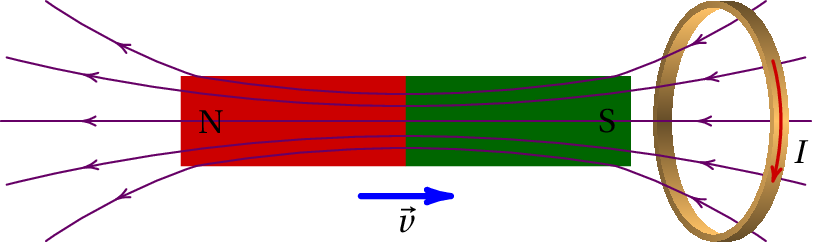
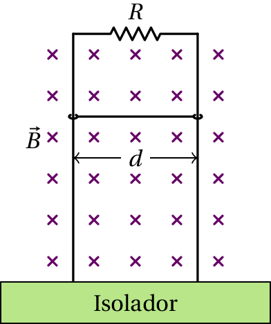
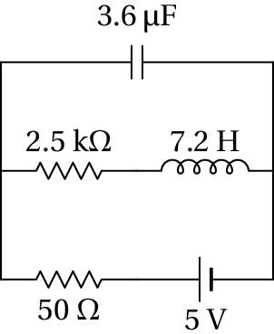

A energia eólica é uma das fontes de energia renováveis que estão a
ser utilizadas para reduzir a contaminação produzida pelos
combustíveis fósseis. Portugal é um dos países em que a energia de
origem eólica corresponde a uma maior percentagem da energia elétrica
total, com aproximadamente 9%. Independentemente do tipo de
combustível ou fonte de energia usada para gerar energia elétrica, em
quase todos os casos é gerada energia mecânica de rotação que é logo
usada para gerar eletricidade. O princípio que permite transformar a
energia mecânica de rotação em eletricidade é a indução
eletromagnética. Viu-se no capítulo
anterior que quando circula corrente por uma bobina que está dentro de
um campo magnético, esta tem uma tendência a rodar; a indução
eletromagnética é o efeito inverso: numa bobina que se faz rodar
dentro de um campo magnético é induzida uma corrente elétrica.
9.1. Campo elétrico induzido
Considere-se uma barra condutora em movimento num campo magnético
uniforme,
, como na figura 9.1. Sobre cada
partícula com carga
do condutor atua a força magnética
(9.1)
Figura 9.1: Condutor num campo magnético.
Essa força faz deslocar as cargas de condução no condutor e na
situação da 9.1, acumular-se-á carga positiva em P e
negativa em Q, qualquer que for o sinal das cargas de condução.
Contudo, se o problema for analisado do ponto de vista do referencial
que se desloca com o condutor (9.2), este está em
repouso e, portanto, não há força magnética sobre as cargas. Como se
explica então o movimento das cargas na barra?
O problema é que a equação 9.1 não pode ser válida em
qualquer referencial, porque a velocidade
é diferente em
diferentes referenciais inerciais, mas a segunda lei de Newton implica
que a força deve ser a mesma em qualquer referencial inercial.
Figura 9.2: Campo elétrico induzido,
.
A equação 9.1 é correta apenas no referencial em que o campo
magnético é estático (não muda com o tempo). A solução do problema é
que os campos elétrico e magnético não são independentes, e a
força 9.1 é apenas uma parte da equação geral para a força
eletromagnética, que deverá dar o mesmo resultado em qualquer
referencial inercial:
(9.2)
No referencial que se desloca com a barra (ver figura 9.2),
é nulo, porque a velocidade da barra é
nula. Mas o movimento das linhas de campo magnético, com velocidade
, produz campo elétrico induzido,
, e força
. Comparando com
a força obtida no referencial em que o campo magnético é estático e
não há campo elétrico (equação 9.1), conclui-se que o campo
induzido é:
(9.3)
É como se no condutor existisse uma f.e.m.
induzida, igual à diferença de potencial entre os seus
extremos. Sendo
o comprimento da barra, a f.e.m. induzida é:
(9.4)
Exemplo 9.1
Uma barra condutora desliza sobre dois trilhos metálicos horizontais,
unidos numa extremidade como, na figura. A distância
é igual a
3.3 cm e no instante
a barra encontra-se a uma distância
cm da extremidade dos trilhos. Para
a velocidade da
barra é uniforme com módulo
cm/s e no sentido indicado na
figura, permanecendo sempre em contacto com os trilhos de forma que
possa circular corrente por eles e pela barra. (a) Sabendo que
os trilhos e a barra são fios cilíndricos de cobre com diâmetro de
1.2 mm, calcule a resistência total do circuito em função de
, para
(admita que a temperatura é 20 °C). (b) Se existir um
campo magnético externo, constante e uniforme, com módulo
G, no
sentido indicado na figura, calcule a corrente no circuito em função
do tempo, para
.
Resolução. (a) O circuito neste caso é um retângulo
com arestas
e
. O comprimento total do fio que constitui o
circuito é
A distância
aumenta com o tempo
segundo a equação:
onde
cm e
cm/s. A área da
secção transversal do fio é
, onde
cm é o raio do fio. A resistividade
do cobre a 20 °C é
·cm e a resistência
do fio que forma o circuito é
em mΩ, se
for medido em segundos. (b) Na barra em
movimento existe uma f.e.m. induzida:
e a intensidade da corrente no circuito é
que em unidades SI, dá:
em mA.
9.2. Gerador de Faraday
Um tipo de gerador de tensão contínua,
inventado por Faraday, consiste num disco condutor, de raio
, que
roda com velocidade angular
dentro de um campo magnético
perpendicular a ele (figura 9.3).
Figura 9.3: Gerador de Faraday.
No referencial que roda com o disco, existe um campo elétrico induzido
na direção radial, com módulo igual a
(9.5)
A diferença de potencial entre os pontos P e Q na figura 9.3 é
(9.6)
e colocando duas escovas condutoras em contato com os pontos P e Q
obtém-se uma fonte de força eletromotriz.
9.3. Lei de Faraday
A equação 9.3 para o campo elétrico induzido não só se aplica
a condutores em movimento, como a qualquer referencial que se desloque
com velocidade
em relação a um sistema onde as linhas de
campo aparecem como fixas no espaço. Do ponto de vista desse
referencial, as linhas de campo deslocam-se com velocidade
e sempre que houver alteração das linhas de campo magnético, surgirá
campo elétrico induzido.
Outra situação em que há alteração das linhas de campo magnético é
quando o campo magnético é variável, dando origem a um campo elétrico
induzido. Uma expressão geral que inclui quer as situações em que o
referencial se desloca em relação ao campo, quer as de campo magnético
variável, é a lei
de Faraday:
Numa espira condutora C, sempre que o fluxo magnético
através da superfície delimitada por C varia, surge uma força
eletromotriz induzida ao longo da espira, igual à derivada do fluxo em
ordem ao tempo.
(9.7)
O fluxo magnético
,
através da superfície S delimitada pela espira, define-se de forma
análoga ao fluxo do campo elétrico. Se o campo for uniforme sobre o
plano da espira, com módulo constante
e formando um ângulo
com o versor perpendicular à espira, o fluxo magnético é
(9.8)
onde
é a área da espira. Se o campo não for uniforme, é preciso
dividir a espira em pequenos elementos diferenciais e somar todos os
fluxos infinitesimais, obtendo-se um integral de superfície.
O versor perpendicular à espira,
, pode ser escolhido a
apontar para qualquer dos dois lados da superfície; o versor que for
escolhido, define o sentido positivo da corrente na espira, usando a
regra da mão direita
(figura 9.4). O
sinal obtido no lado direito da equação 9.7 indica o sentido
do campo induzido na espira, tendo em conta que o sentido positivo é o
que segue a regra da mão direita em relação ao versor
.
Figura 9.4: Definição do versor normal a uma curva plana.
O sentido do campo induzido pode também ser determinado pela
lei de Lenz:
A força eletromotriz e o campo induzido são sempre no sentido
que produz um campo magnético induzido que contraria a variação do
fluxo magnético externo.
Tal como no caso do campo elétrico (nas regiões onde não há cargas) ou
do escoamento de um fluido incompressível, o fluxo é o mesmo através
de todas as superfícies atravessadas pelas mesmas linhas de campo. As
linhas de campo magnético que passam pela periferia de uma secção
conexa de uma superfície delimitam uma região do espaço que é um tubo
de fluxo magnético constante.

Figura 9.5: Íman em movimento junto de uma espira condutora.
Um exemplo de aplicação da lei de Faraday é o caso de um íman que se
aproxima de um anel condutor, com velocidade
. O movimento do íman
implica variação do fluxo magnético através do anel.
Na situação representada na figura 9.5, o fluxo magnético no
anel é no sentido da esquerda para a direita e está a
aumentar. Aparece então corrente induzida no anel, dando origem a
fluxo magnético da direita para a esquerda, que contraria o aumento do
fluxo externo. Como tal, o campo magnético induzido aponta para a
esquerda, o que implica que a corrente e a f.e.m. induzidas no anel
são no sentido indicado na figura. É como se tivesse sido ligada uma
pilha no anel.
Exemplo 9.2
Uma espira condutora retangular com lados de 20 cm e 30 cm encontra-se
sobre o plano O
, com um vértice na origem, como mostra a figura. A
partir do instante
aparece na região onde se encontra a espira
um campo magnético variável com componentes (unidades SI):
(a) Calcule a f.e.m. induzida na espira, em função do tempo
, a
partir do instante
. (b) Diga (justificando) qual é o
sentido da corrente induzida na espira.
Resolução. (a) Como o campo é uniforme pode-se usar a
equação 9.8. A espira é perpendicular ao eixo dos
e
pode-se escolher o versor normal à espira igual a
;
assim sendo, o produto
será a componente
do campo
e o fluxo magnético através da espira é
A f.e.m. induzida calcula-se usando a lei de Faraday
(em volts, se
for dado em segundos).
(b) Como
é positivo, o valor de
calculado
na alínea anterior é sempre negativo. Isso quer dizer que a corrente
induzida é no sentido oposto do sentido usado para definir o versor
normal à espira. A escolha de
implica que se
está a percorrer a espira no sentido anti-horário, vista desde o
semieixo positivo dos
. A corrente induzida é então no sentido dos
ponteiros do relógio, como mostra a figura ao lado.
Outra forma de obter o sentido da corrente consiste em observar que o
campo
inicialmente aponta no sentido negativo do eixo dos
,
mas está sempre a aumentar no sentido positivo do eixo dos
. O
campo induzido deve contrariar esse aumento, apontando no sentido
negativo do eixo dos
. Pela regra da mão direita, um campo
magnético induzido no sentido negativo do eixo dos
implica
corrente induzida em sentido dos ponteiros do relógio.
9.4. Gerador de tensão alternada
Um gerador de tensão alternada
(figura 9.6), consiste numa bobina que se faz
rodar dentro de um campo magnético; o fio onde começa a bobina está
soldado a um anél condutor e o fim do fio, depois de ser enrolado na
bobina, solda-se a outro anel condutor; esses dois anéis mantêm o
contato com duas escovas, P e Q, enquanto a bobina roda, de forma que
é igual à diferença de potencial
na bobina.
Figura 9.6: Gerador de tensão alternada.
O fluxo magnético através da bobina é:
(9.9)
onde
é o número de espiras,
o campo magnético médio,
a
área de cada espira, e
o ângulo médio entre o campo e a
normal à bobina.
Se a bobina roda com velocidade angular constante,
, o ângulo
, em função do tempo, é dado por
. Como
tal, a derivada do fluxo magnético em ordem ao tempo é
(9.10)
onde
. A expressão 9.10 dá
a diferença de potencial entre as duas escovas condutoras, em função
do tempo e é designada tensão alternada.
A diferença de potencial oscila entre um
valor máximo
positivo e um valor mínimo negativo
. A frequência da tensão
alternada,
, é o número de oscilações por
unidade de tempo.
O gerador de tensão alternada, também chamado alternador, usa-se para gerar energia elétrica a partir de
energia mecânica. A fonte da energia mecânica, que faz rodar a bobina,
pode ser o vento, nas centrais de energia eólica, a corrente de água,
nas centrais hidroelétricas, o fluxo de vapor de água evaporada por
combustão de carvão, o movimento do motor, no alternador usado para
recarregar a bateria num automóvel, etc.
É importante regular a velocidade de rotação da bobina, de forma a
manter uma velocidade angular constante, para que a tensão elétrica
produzida tenha uma frequência constante. É por isso que as aspas num
moinho de vento de uma estação eólica rodam lentamente e com
velocidade angular constante. Existe um mecanismo mecânico usado para
regular essa velocidade.
9.5. Indução mútua
Num circuito a corrente dá origem a campo magnético e, portanto, a
fluxo magnético. Como tal, qualquer variação da corrente dá origem a
uma força eletromotriz induzida no circuito.
Por exemplo, quando se fecha um interruptor num circuito de corrente
contínua, a corrente não aumenta instantaneamente de zero até um valor
final, devido à indutância do circuito. A tendência da corrente para
aumentar bruscamente é contrariada por uma corrente induzida oposta,
que impõe o aumento da corrente de forma gradual. Igualmente, quando
se abre o interruptor, a corrente não passa a ser nula de forma
instantânea mas sim gradual.
Imaginem-se dois circuitos, lado a lado (figura 9.7). No
primeiro circuito há uma fonte de tensão que produz corrente e uma
resistência variável que permite alterar a intensidade dessa
corrente. No segundo circuito não há nenhuma fonte de tensão.
Figura 9.7: Indução mútua entre dois circuitos.
A corrente no circuito 1 (lado esquerdo) origina fluxo magnético
através do circuito 2, diretamente proporcional à corrente
que
produz esse campo magnético:
(9.11)
onde
é uma constante chamada indutância mútua,
que depende da forma dos circuitos e da
distância entre eles.
A variação da corrente no circuito 1 induz força eletromotriz no
circuito 2:
(9.12)
No sistema internacional, a unidade da indutância (V·s/A) é o
henry, representado pela letra H, em
homenagem ao físico Joseph Henry (1797–1878).
9.6. Indutância
A corrente numa bobina produz campo magnético que atravessa as espiras
da bobina, como mostra a figura 9.8. Como tal, a bobina
produz fluxo magnético através de si própria e qualquer alteração da
corrente na bobina dá origem a variação desse fluxo, produzindo força
eletromotriz induzida na bobina, que contraria a alteração da
corrente.
Figura 9.8: Campo magnético produzido pela corrente numa bobina.
O campo magnético produzido pela bobina é diretamente proporcional à
corrente. Como tal, o fluxo magnético produzido pela bobina sobre si
própria é proporcional à corrente:
(9.13)
e a constante
é a indutância da bobina. A
f.e.m. autoinduzida na própria bobina é:
(9.14)
Quanto maior for a área das espiras na bobina, maior é a sua
indutância. Quanto maior for o número de espiras,
, na bobina,
maior será também a área atravessada pelas linhas de campo e maior
será também o próprio campo magnético. Como tal, a indutância de uma
bobina com
espiras é diretamente proporcional a
. A
indutância da bobina é
vezes a indutância de cada uma das suas
espiras por separado:
(9.15)
Todos os dispositivos têm indutância, mas geralmente essa indutância
tem valor muito baixo que pode ser ignorado, exceto no caso das
bobinas, usadas nos circuitos quando é necessário ter indutância não
desprezável. A f.e.m. autoinduzida 9.14 num dispositivo,
representa-se num circuito de alguma das duas formas indicadas na
figura 9.9. O símbolo usado no lado direito chama-se
indutor, e em relação aos sinais usados na
figura, a voltagem no indutor é: (o sinal positivo é devido à troca
dos sinais em relação ao diagrama do lado esquerdo)
(9.16)
Figura 9.9: Diagrama de circuito de um indutor.
Tal como a indutância mútua, a indutância
mede-se em henrys no
sistema internacional de unidades.
9.7. Circuitos com indutores
Num circuito de corrente contínua, com fontes de tensão contínua, as
correntes atingem o estado estacionário em que permanecem
constantes. No estado estacionário, a equação 9.16 implica
que em todos os indutores no circuito a voltagem é nula, mas a
corrente pode ter qualquer valor. Isso implica que, no estado
estacionário, os indutores podem ser considerados curtos-circuitos
(fios com resistência nula).
Em qualquer instante em que se altera o estado estacionário, por ligar
ou desligar alguma fonte, ou por abrir ou fechar algum interruptor, a
corrente nos indutores não muda de forma instantânea, porque de acordo
com a equação 9.16 qualquer aumento instantâneo da corrente
implica voltagem infinita, que é impossível. A corrente nos indutores
varia sempre de forma contínua, enquanto que nas resistências,
condensadores e fontes pode ser descontínua nos instantes em que se
altera o estado estacionário. Mas a derivada da corrente nos indutores
nesses instantes não é nula, devido à alteração introduzida no
circuito. Como tal, a voltagem pode ter qualquer valor nesses
instantes, e a corrente mantém o mesmo valor que tinha no estado
estacionário.
Conclui-se então que em qualquer instante
em que é feita alguma
mudança repentina no circuito, a voltagem num indutor pode ter
qualquer valor, mas a corrente deverá ter o mesmo valor
que
tinha imediatamente antes da mudança ter acontecido. Se no instante
em que se altera o estado estacionário do circuito a corrente no
indutor é nula, o indutor é equivalente a um interruptor aberto, onde
a corrente é nula, mas a voltagem pode ter qualquer valor.
Após o instante
em que há uma alteração repentina do circuito,
as correntes nos indutores mudam gradualmente (resposta
transitória). Mas como não podem mudar
indefinidamente, o circuito volta a atingir o estado estacionário em
que as correntes nos indutores têm valores finais constantes. Para
calcular esses valores finais das correntes, os indutores podem ser
substituídos por curtos-circuitos (estado estacionário).
Exemplo 9.3
Uma bobina com resistência de 10 Ω e indutância de 1 H é ligada
a duas resistências e a uma fonte de 12 V, como indica o
diagrama. Encontre a corrente na resistência de 2 kΩ, no
instante em que se fecha o interruptor e muito tempo após esse
instante inicial. Determine a razão entre as correntes inicial e final
nessa resistência.
Resolução. Como antes de ser fechado o interruptor
não passa corrente pelo indutor, no instante inicial o
indutor é equivalente a um interruptor aberto, ou seja, não
circula corrente pela resistência de 10 Ω e é como se
essa resistência e o indutor não existissem. Ignorando esses
dois elementos, o circuito corresponde a uma única malha com
a fonte e as duas resistências de 1 kΩ e 2 kΩ em
série. Nessas condições, a corrente inicial nessas duas
resistências é
Para calcular a corrente final, substitui-se o indutor por um
curto-circuito:
as resistências de 2 kΩ e 10 Ω estão em paralelo,
podendo ser substituídas por uma única resistência com valor
2000 || 10 = 2/201 kΩ, que fica em série com a
resistência de 1 kΩ e a resistência equivalente entre os
terminais da fonte é
a corrente final que sai da fonte é
mA e a diferença
de potencial na resistência de 2 kΩ é
a corrente final na resistência de 2 kΩ é:
A razão entre as correntes inicial e final é:
O exemplo anterior mostra uma das propriedades importantes dos
indutores que os torna muito úteis como
balastros, dispositivos em que a corrente
inicial é elevada mas a corrente final é muito menor. Os balastros são
usados nas lâmpadas fluorescentes em que é necessária uma corrente
elevada quando a lâmpada é ligada, para garantir a ionização do gás
dentro do tubo tornando-se condutor; após a ionização do gás, se a
corrente mantivesse o valor inicial elevado, a lâmpada queimava-se.
Figura 9.10: Diagrama do circuito de uma lâmpada fluorescente.
A figura 9.10 mostra o circuito usado para controlar uma lâmpada
fluorescente, inventado por Nikola Tesla
(1856–1943). Neste caso a fonte de alimentação é de tensão
alternada. O balastro é a bobina G; como a sua resistência interna
costuma ser baixa, foi ignorada no diagrama e as barras paralelas a
tracejado representam um núcleo de material ferromagnético colocado
dentro da bobina para aumentar a sua indutância. Inicialmente, o gás
dentro do tubo A é isolador, porque não está ionizado; a corrente
passa pelos dois filamentos F, que aquecem o gás, facilitando a
produção de iões.
Dentro do arrancador C, há uma lâmina metálica curva, que com a
passagem da corrente é aquecida e dilata, mudando a sua
curvatura. Isso faz com que o interruptor em D seja aberto, deixando
de passar corrente pelos filamentos e arrancador, mas passando através
do tubo A, onde o gás já foi ionizado.
Um outro efeito da bobina G é que no instante em que o interruptor D é
aberto, a corrente não cai imediatamente para zero; continuam a
acumular-se cargas nos dois terminais do interruptor aberto,
criando-se um campo elevado que pode produzir faíscas. Para evitar
essas faíscas, que podem queimar o metal, liga-se um condensador E, em
paralelo, que acumula cargas de forma segura.
As atuais lâmpadas economizadoras de
energia são também lâmpadas fluorescentes, em versão reduzida. As
funções do balastro e o arrancador são garantidas por um pequeno
circuito dentro da lâmpada, como pode ser visto na
figura 9.11.
Figura 9.11: Circuito de lâmpada.
Perguntas
(Para conferir a sua resposta, clique nela.)
Quando um comboio com motor elétrico sobe um trajeto com declive,
consome potência elétrica proveniente de uma central elétrica. No seu
modo mais eficiente de operação, nos trajetos em que o comboio desce:
Deve consumir ainda maior potência.
Pode gerar potência elétrica sendo alimentada de volta para a central.
Não consome nem gera potência elétrica.
Consome a mesma quantidade de potência.
Nenhuma das anteriores.
Uma barra condutora, com 25 cm de comprimento, desloca-se com
velocidade uniforme de 12 m/s, num plano perpendicular a um campo
magnético uniforme de 80 G. Calcule a diferença de potencial induzida
nos extremos da barra.
240 V
0.24 V
0.024 V
0.384 V
3.84 kV
Uma espira de fio condutor desloca-se, com velocidade constante,
dentro de uma região onde existe um campo magnético uniforme e
constante no tempo, perpendicular ao plano da espira. A
f.e.m. induzida nos terminais da espira é então:
Variável no tempo.
Constante e diferente de zero.
Negativa.
Positiva.
Nula.
Se o número de espiras duma bobina é reduzido para metade e a corrente
através dela é triplicada, mantendo outras propriedades (área das
espiras, forma, etc.) constantes, a sua indutância então:
Aumenta 4 vezes.
Aumenta 6 vezes.
Aumenta 9 vezes.
Diminui 6 vezes.
Diminui 4 vezes.
Uma bobina retangular de 3 cm por 5 cm tem 100 espiras e o seu versor
perpendicular faz um ângulo de 55° com um campo magnético
uniforme de 0.35 T. A bobina roda, durante 0.33 s, até o ângulo entre
o campo e o versor perpendicular aumentar para 90°. Calcule
a força eletromotriz induzida média.
160 mV
130 mV
91 mV
68 mV
29 mV
Problemas
Um íman desloca-se a velocidade constante sobre o eixo de uma espira,
como mostra a figura. (a) Represente num gráfico, em forma
qualitativa, o fluxo magnético
através da espira em função
do tempo
. Indique o instante
em que o íman está a meio da
travessia da espira. (b) Represente o gráfico da corrente
na espira em função do tempo.
Uma barra metálica de comprimento
cm desloca-se com velocidade
constante
cm/s, numa região onde há campo magnético uniforme
com intensidade
G, perpendicular à barra (ver
figura). Determine a diferença de potencial
.
O comprimento total entre as pontas das asas de um avião Boeing 747 é
60 m . O avião voa a 800 km/h e com altura constante, na direção
sul-norte, numa região onde o campo magnético terrestre faz um ângulo
de 60° com a vertical e a sua intensidade é 0.5 G. Calcule a
diferença de potencial induzida entre as pontas da asas.
O plano de uma espira quadrada de cobre, com 4 cm de lado, está na
posição horizontal. Coloca-se um eletro-íman em forma de barra na
posição vertical, acima do plano da bobina e com o seu polo norte mais
próximo da espira mas um pouco afastado do seu centro, de tal forma
que as linhas de campo magnético atravessam a espira formando um
ângulo de 30° com a vertical. Calcule a f.e.m. induzida média
na espira, enquanto a intensidade do campo magnético do eletro-íman,
na superfície da espira, varia desde zero até um valor final de 0.5 T,
num intervalo de 200 ms. Qual o sentido da corrente induzida na
espira?
A figura mostra uma barra condutora de comprimento
e massa
que
desliza sobre dois trilhos metálicos verticais, dentro de um campo
magnético
uniforme. A resistência elétrica dos trilhos e da
barra são desprezáveis comparadas com
. A barra mantém sempre o
contato com os trilhos, permitindo que circule corrente pela
resistência
, mas o atrito é desprezável, assim como o efeito da
resistência do ar na barra. Quando a barra começa a cair livremente,
o seu movimento é inicialmente acelerado mas rapidamente atinge uma
velocidade constante
. Calcule o valor dessa velocidade limite
.

No interior da circunferência a tracejado na figura existe um campo
magnético que aponta para lá da folha e com módulo que depende do
tempo
segundo a expressão
(unidades
SI). Determine a intensidade, direção e sentido do campo elétrico
induzido dentro do anel condutor de raio
cm.
Uma espira condutora retangular, paralela ao plano O
, desloca-se
com velocidade constante
(m/s) dentro de uma
região onde existe um campo magnético com componentes:
(SI) e
. Calcule a f.e.m. induzida na espira, em função do
tempo
, a partir do instante
em que a espira se encontra na
posição da figura, com um lado ao longo do eixo dos
.
No circuito da figura, calcule as correntes iniciais no indutor e no
condensador, a corrente final no indutor e a carga final no
condensador.

(a) No circuito da figura, o interruptor
tem estado fechado durante muito tempo e o interruptor
aberto; determine a corrente no indutor. (b) A
seguir, abre-se o interruptor
e simultaneamente
fecha-se o interruptor
; nesse preciso instante, a
corrente no indutor deve ter o mesmo valor calculado na alínea
anterior. Explique qualitativamente o que acontece com a corrente no
indutor e a carga no condensador a partir desse instante.
No circuito representado no diagrama, a fonte foi ligada no instante
, quando o condensador estava descarregado e não havia corrente no
indutor. Determine as correntes em cada resistência em
e quando
o circuito atingir o estado estacionário.
No circuito representado no diagrama, a fonte foi ligada no instante
, quando não havia corrente no indutor. (a) Determine a
voltagem na resistência de 3.4 kΩ em
. (b)
Determine o valor da derivada voltagem na resistência de 3.4
kΩ, em
. (c) Determine a voltagem na resistência de
3.4 kΩ, quando o circuito atingir o estado estacionário.
A fonte no circuito do diagrama foi ligada no instante
, quando a
corrente nos dois indutores era nula. (a) Determine a diferença
de potencial em cada um dos dois indutores, no instante
. (b) Encontre o valor da derivada da corrente em cada
indutor, em
. (c) Determine a intensidade da corrente em
cada indutor, após o circuito atingir o estado estacionário.
Respostas
Perguntas:1. B. 2. C. 3. E.
4. E. 5. C.
Problemas
O fluxo aumenta até um valor máximo, decresce até um valor mínimo
local em
, volta a aumentar até o valor máximo e a seguir diminui
monotonicamente. A corrente troca de sentido 3 vezes, nos 3 pontos
onde o fluxo é máximo ou mínimo. Enquanto o anel se aproxima desde
longe a corrente aumenta desde zero, e quando o anel já está a
afastar-se longe do íman, a corrente decresce até zero.
V.
0.33 V.
3.5 mV. Vista de cima, a corrente na espira tem sentido anti-horário.
.
, na direção tangente ao anel
e no sentido horário.
V, no sentido anti-horário visto desde a esquerda.
Inicialmente, 100 mA no condensador e 0 no indutor. No fim, 1.96 mA no
indutor e 17.6 µC no condensador.
(a) 20 mA. (b) A corrente diminui enquanto a carga
aumenta; quando a corrente decresce até zero, a carga atinge um valor
máximo e nesse momento, o condensador começa a descarregar, surgindo
uma corrente que aumenta, no sentido contrário à corrente
inicial. Quando a carga diminui até zero, a corrente é máxima e com a
mesma intensidade inicial. O ciclo repete-se indefinidamente, pois não
existe nenhuma resistência que dissipe energia.
Em
, 1.91 mA na resistência de 4.7 kΩ, e 2.0 mA nas resistências de
1.8 kΩ e 2.7 kΩ. No estado estacionário, 2.56 mA na resistência de 1.8 kΩ,
0.93 mA na resistência de 4.7 kΩ, e 1.63 mA na resistência de 2.7 kΩ.
(a) 0. (b) 41.26 kV/s. (c) 5 V.
(a) 24 V no indutor de 1.2 H, e 0 no indutor de 5 H.
(b) 20 A/s no indutor de 1.2 H, e 0 no indutor de 5 H.
(c) 5 A no indutor de 1.2 H, e 1 A no indutor de 5 H.
Pergunta 1, resposta A: Errada
Nas descidas, o peso faz acelerar o comboio, sendo desnecessário o
motor elétrico.
(clique para continuar)
Pergunta 1, resposta B: Certa
O peso faz acelerar o comboio. Se o motor for usado como gerador
(travão eletromagnético) a energia potencial gravítica pode ser
convertida em energia elétrica.
(clique para continuar)
Pergunta 1, resposta C: Errada
O peso faz acelerar o comboio, sendo necessário travar. O motor pode
ser usado como gerador (travão eletromagnético) para transformar
energia potencial em energia elétrica.
(clique para continuar)
Pergunta 1, resposta D: Errada
Nas descidas, o peso faz acelerar o comboio, sendo desnecessário o
motor elétrico.
(clique para continuar)
Pergunta 1, resposta E: Errada
O peso faz acelerar o comboio, sendo necessário travar. O motor pode
ser usado como gerador (travão eletromagnético) para transformar
energia potencial em energia elétrica.
(clique para continuar)
Pergunta 2, resposta A: Errada
A unidade SI de campo magnético é o tesla (T) e não o gauss (G).
(clique para continuar)
Pergunta 2, resposta B: Errada
A unidade SI de campo magnético é o tesla (T) igual
10−4 G.
(clique para continuar)
Pergunta 2, resposta C: Certa
(clique para continuar)
Pergunta 2, resposta D: Errada
A diferença de potencial induzida é igual ao campo induzido, vezes o
comprimento da barra.
(clique para continuar)
Pergunta 2, resposta E: Errada
A diferença de potencial induzida é igual ao campo induzido, vezes o
comprimento da barra.
(clique para continuar)
Pergunta 3, resposta A: Errada
O fluxo magnético através da espira permanece constante.
(clique para continuar)
Pergunta 3, resposta B: Errada
O fluxo magnético através da espira permanece constante.
(clique para continuar)
Pergunta 3, resposta C: Errada
O fluxo magnético através da espira permanece constante.
(clique para continuar)
Pergunta 3, resposta D: Errada
O fluxo magnético através da espira permanece constante.
(clique para continuar)
Pergunta 3, resposta E: Certa
O fluxo magnético através da espira permanece constante.
(clique para continuar)
Pergunta 4, resposta A: Errada
A diminuição do número de espiras faz diminuir a indutância.
(clique para continuar)
Pergunta 4, resposta B: Errada
A indutância de qualquer dispositivo não depende da corrente.
(clique para continuar)
Pergunta 4, resposta C: Errada
A indutância de qualquer dispositivo não depende da corrente.
(clique para continuar)
Pergunta 4, resposta D: Errada
A indutância de qualquer dispositivo não depende da corrente.


Nas descidas, o peso faz acelerar o comboio, sendo desnecessário o motor elétrico.
(clique para continuar)